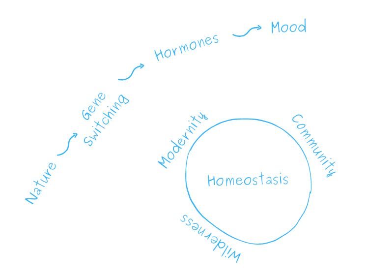

Mood Forest
Can the wild make us fit for the modern world?
Mood Forest Model
Wilderness, emotional health and homeostasis hypothesis

What is the challenge?
Modernity is extremely advantageous to humanity in many ways: electricity, internet, airplanes, pharmaceuticals and much more; however, our biological design, like of all other animals, still remains dominated by the ancient genome. While holding the same old biology we have made two major changes in our lifestyle: we have become a lot sedentary and indoor, this probably is affecting switching of many genes and thereby giving rise to many emotional and physiological ailments.

What is the research vision?
If we could figure out small wilderness modules and dosages, it might tremendously help humanity come out of the modern emotional and physiological ailments.
Plan of Work
- Analyzing raw data of wilderness exposure experiences of last five years at Sehatvan.
- Designing models for estimation and expression of wilderness, emotional health and homeostasis.
- Setting-up a Mood Forest laboratory for conducting controlled experiments.
- Designing wilderness delivery modules and optimizing dosages
- Setting-up or linking many tiny forests for continued studies and deliveries.
Key Elements
Wilderness
In wilderness, we meet nature. To connect with nature is to connect with something beyond humans, of which we are a part. The core of the mind is the ecological unconscious.
“The clearest way into the Universe is through a forest wilderness.” - John Muir
Why do we need wilderness?
-
Ecopsychology: How Immersion in Nature Benefits Your Health - Jim Robbins
A growing body of research points to the beneficial effects that exposure to the natural world has on health, reducing stress and promoting healing. Now, policymakers, employers, and healthcare providers are increasingly considering the human need for nature in how they plan and operate. -
Green spaces and mortality: a systematic review and meta-analysis of cohort studies - David Rojas et. al / The Lancet
The lead author of a sweeping study on the health benefits of greenery, David Rojas, advises that “where you are, increase and support more green-ness around your home.”
"A wilderness, in contrast with those areas where man and his own works dominate the landscape, is hereby recognized as an area where the earth and its community of life are untrammeled by man, where man himself is a visitor who does not remain." - US Wilderness Act
"Thousands of tired, nerve-shaken, over-civilized people are beginning to find out that going to the mountains is going home; that wildness is a necessity; and that mountain parks and reservations are useful not only as fountains of timber and irrigating rivers, but as fountains of life." - John Muir

Homeostasis
Homeostasis refers to the capacity of the body to maintain the stability of diverse internal variables, such as temperature, acidity, and water level, in the face of constant environmental disturbance.
To return to homeostasis is to return home. - Madhur Anand
How to work from home(ostasis)?
Is there an ideal state? More often than not we think in terms of ideal state and current state, we want to be ‘high’ - higher productivity, higher income, higher IQ, higher performance, high speed or higher state of being.
-
The Brain and Body Prioritize Adaptation, Not Balance - Markham Heid, The Nuance
Allostasis’ is reshaping science’s understanding of disease and disorder - Nutrient homeostasis — translating internal states to behavior - Daniel Munch et. al, 2020, Current Opinion in Neurobiology
-
The Theory of Subjective Wellbeing Homeostasis: A Contribution to Understanding Life Quality - Robert Cummins, 2021
It concerns the proposal that subjective well-being (SWB) is managed by a system of psychological devices which have evolved for this purpose.

Emotional Fitness
Four key aspects of emotional fitness are emotional resilience, positive emotions, cognitive flexibility and emotional well-being
Make the sunrise a temple. ― Frank LaRue Owen, The School of Soft-Attention
It's 2021! Why hasn't life become as easy as they promised in the 60s?
Each year, a new product makes life even more physically convenient - making it possible to be even more indoor and sedantary. On the other hand, emotional and mood disorders have been increasing year by year. Conveniences can make a body weaker. Is poor physical fitness undercutting our emotional fitness?
-
Evolutionary Mismatch, Emotional Homeostasis, and “Emotional Addiction”: A Unifying Model of Psychological Dysfunction - John Montgomery, Evolutionary Psychological Science volume 4, pages 428–442 (2018)
Psychological disorders as a whole appear to develop at significant frequencies only under conditions of “evolutionary mismatch,” where people or animals live in environments, such as modern cities or industrialized cultures in general, that they are not evolutionarily or biologically adapted for. - Where the wild things are! Do urban green spaces with greater avian biodiversity promote more positive emotions in humans? - Ross Cameron et. al (2020)
- Video Lecture - Physiological approach to emotional fitness - Vipin Gupta

The work already happening
Here is a list of research and applied work happening in the related fields. These are the guideposts and inspirations for further investigation.
Publications
- Nature Contact and Human Health: A Research Agenda - Howard Frumkin et. al - Link
Nature contact may offer a range of human health benefits. Although much evidence is already available, much remains unknown. A robust research effort, guided by a focus on key unanswered questions, has the potential to yield high-impact, consequential public health insights. -
Nature and mental health: An ecosystem service perspective - Gregory Bratman et. al - Link
Here, we first provide points of consensus across the natural, social, and health sciences on the impacts of nature experience on cognitive functioning, emotional well-being, and other dimensions of mental health. We then show how ecosystem service assessments can be expanded to include mental health, and provide a heuristic, conceptual model for doing so. - The Emotional Affordances of Forest Settings: An Investigation in Boys with Extreme Behavioural Problems - Jenny Roe & Peter Aspinall (2011) - Link
- The Psychological and Physical Effects of Forests on Human Health: A Systematic Review of Systematic Reviews and Meta-Analyses - Marita Stier-Jarmer (2021)- Link
- A comparative study of the physiological and psychological effects of forest bathing (Shinrin-yoku) on working age people with and without depressive tendencies - Kensuke Norikoshi & Toshio Kobayashi (2019) - Link
- Fostering Reasonableness: Supportive Environments for Bringing Out Our Best - Avik Basu & Rachel Kaplan - Read Online
- What is Health? Allostasis and the Evolution of Human Design - Peter Sterling - MIT Press
- International Handbook of Forest Therapy - Andreas Michalsen, Dieter Kotte, Qing Li, Won Sop Shin (2019) - Link
Projects
-
The Global Ecovillage Network (GEN) catalyzes communities for a regenerative world. GEN is a growing network of regenerative communities and initiatives that bridge cultures, countries, and continents.
GEN builds bridges between policy-makers, governments, NGOs, academics, entrepreneurs, activists, community networks and ecologically-minded individuals across the globe in order to develop strategies for a global transition to resilient communities and cultures. - Healing Forest is an idea to discover and promote the healing powers of nature. Through films, nature walks, articles and activities we hope to create greater awareness about the link between us and nature. The intention is to create a small community of people who can lead healing forest walks that connect people with nature and create a healthy society as well as a healthy planet.
-
Association of Nature and Forest Therapy
Guides and Programs
We are an international community of Forest Therapy Guides who have been trained by Nature and Forest Therapy Guides and Programs. There are more than 850 of us (growing each month), in 55 countries on six continents, guiding in a dozen or more languages and in many cultures.
Places
- Sehatvan - a center for forest fitness - Bhopal, India
A place to experiment on mind, body, food and habitat. It hosts in-campus and online workshops and retreats for rebooting physical and emotional fitness -
Sadhana Forest - Auroville, India
Sadhana Forest is a volunteer based organization focused on reforestation and food security in arid areas. We work in India, Haiti and Kenya.
About Us
Curated by:
Madhur Anand
Work: Body-Mind Coach, Co-founder - Sehatvan
Education: BA(Hons.) Psychology, MA - Clinical Psychology (Batch of 2022) - Indira Gandhi National Open University, India
Khoji Program in Green Entreprenuership and Youth Leadership - Swaraj University
Supported by:
Sehatvan - Center for Forest Fitness - Bhopal, IndiaThe project derived its name by combining an Urdu word ‘sehat’ meaning health with ‘van’, a hindi word meaning ‘forest’. The approach is guided by the Hindi word for healthy - ‘swasth’. Swasth is formed by combining two separate words ‘swa + sthit’, which mean ‘being situated in oneself’. Hence, the emotional dimension of well being/fitness has been an important element in health restoration at Sehatvan.
How to Participate?
- As research collaborators
- As health seekers
- As volunteers
Get in touch
We would love to hear from you.